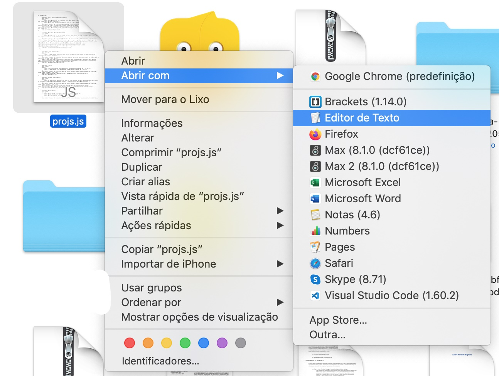

!!Como iniciar sessão no Cyberduck!!
1. Carregar em "Abrir Ligação".

2. Preencher com os dados. A "Porta" deve ser a 21, e o protocolo deve ser o SFTP.

3. Carregar em "Ligar"
4. Estás dentro!
O javascript é muito picky com quotes "" e apostrofes '.
Ou seja, para que não haja problemas, todas as apostrofes e quotes devem ser escritas assim \' e assim \" , com uma barra antes.
Podes fazer isto manualmente, ou podes por exemplo abrir o Pages ou outro software de texto que uses e utilizar a função de Find and Replace para fazer esta mudança!
Depois copias as informações para aqui e voilà!
Caso não haja título de exposição (ex: Trattegio / Rigatino) podes deixar em branco!
Caso um projeto tenha um título da exposição, mas não queiras especificar o nome das peças, mas apenas a sua descrição (ex: Sonic Materialities), inclui aqui o título, e na secção "Peças" deixa o título em branco, e preenche só com a descrição da mesma
Este é o título que aparece na página "Works", a não ser que deixes em branco, nesse caso aparecerá o nome das peças (ver em baixo)
Data do projeto, se quiseres por mais do que um ano não tem problema!
Peças incluídas dentro de um projeto. Na linha de cima deves colocar o título da peça, e na de baixo a descrição da mesma.
Caso não definas o título da exposição, na homepage aparecerão os títulos das peças (ex: Tratteggio / Rigatino)
Podes incluir apenas descrições das peças, sem referir o título (ex: Sonic Materialities)
Atenção às apostrofes e aspas! Usar sempre \' e \"
Imagens que aparecem nos projetos.
Aqui nunca podes deixar um campo em branco!
1. Antes de escreveres algo aqui, deves adicionar as imagens à pasta do site.
No fundo da página deixei uma explicação de como fazer login no Cyberduck pela primeira vez!
1.1. Abrir o Cyberduck e ir a "andreiasantana.net/media"
1.2. Criar uma pasta e colocar as imagens lá dentro.
2. Colocar as imagens desejadas dentro dessa pasta e certificar-te que estão em formato .jpg
É boa prática manter as imagens a 72dpi e com a medida mais pequena a 720px. Isto garante que o site carrega rapidamente.
2.1. Tenta dar nomes simples às imagens!Por norma demos sempre nomes a contar a partir do zero (ex: 0.jpg, 1.jpg, 2.jpg, etc.), o que as distingue das imagens de outros projetos é o facto de estarem numa pasta diferente.
2.2. Não utilizes carateres especiais nem na nomenclatura da pasta, nem das imagens e substitui espaços por underscores "_"
3. Carregar em "adicionar imagem" e escrever o "path" da mesma.
Por exemplo: "media/pasta_imagens/0.jpg" (sem as quotes!)
Pequeno mosaico que aparece on hover no menu "Works", deves seguir a mesma regra da secção "Imagens"
Inclui apenas uma imagem.
1. Preencher com as informações desejadas.
2. Fazer Download do ficheiro.
3. Abrir o ficheiro "code.txt" e copiar todo o conteúdo do ficheiro.
4. Abrir o Cyberduck (ver explicação a baixo) e navegar para "andreiasantana.net/scripts/projs.js"
5. Fazer right-click e selecionar "Descarregar como", gravar o ficheiro num sítio conveniente
6. Abrir o ficheiro "projs.js" com o Text Editor e fazer scroll down até onde diz "// ░▒▓█ PASTE BELLOW HERE █▓▒░"
7. Colar o texto do ficheiro code.txt entre estas linhas.
8. Gravar o ficheiro
9. Voltar ao Cyberduck e arrastar o ficheiro "projs.js" recentemente guardado para a pasta "scripts", isto substitui o ficheiro por este novo.
10. Feito! Podes fechar o Cyberduck!
1. Carregar em "Abrir Ligação".
2. Preencher com os dados. A "Porta" deve ser a 21, e o protocolo deve ser o SFTP.
3. Carregar em "Ligar"
4. Estás dentro!